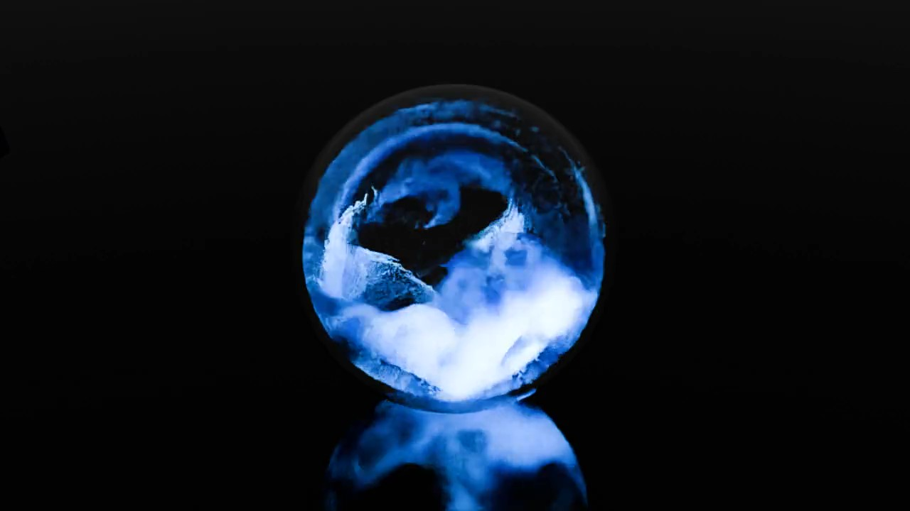
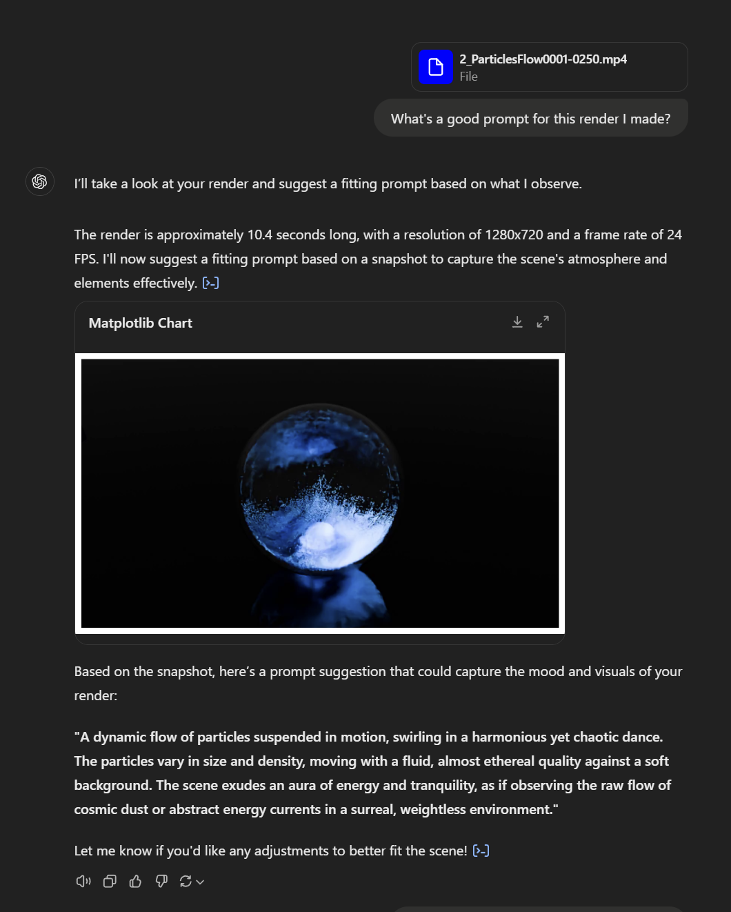
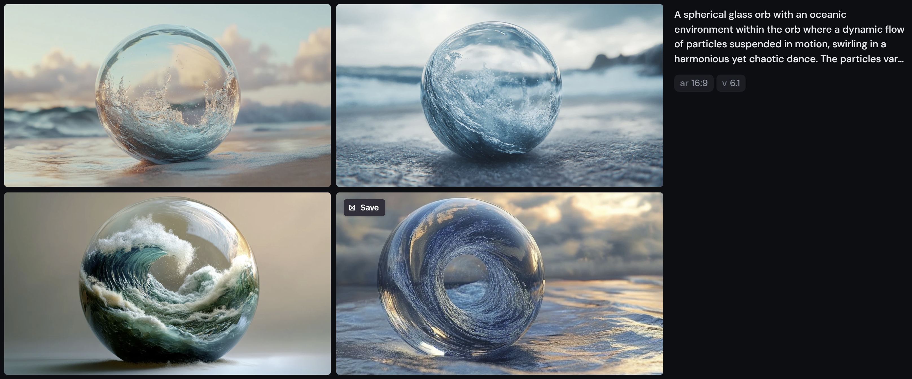
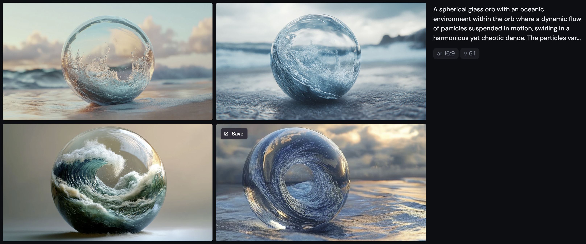

Experiment 1 - Orb Animation
Overview
Original Orb Animation
In Blender, I rendered an animation of an orb with particles moving around inside.
It seemed like a great video for experimenting with various AI tools. Here's a summary of my journey and findings:
Runway Results
I started by testing the video in Runway, trying different materials to see what results it could generate. However, some of the outputs were far from ideal, and unfortunately, I ran out of credits before being able to test further. Still, I plan to revisit it for improved results if I can.
Note on Still Images: Using a still image from the original animation produced notably better results in both Runway and Minimax. This was an important takeaway that shaped the rest of my experiment.
Experimenting with ChatGPT and Midjourney
Since ChatGPT doesn’t support video-to-video conversion, I instead used it to generate a prompt based on my original video. Surprisingly, it produced a good starting prompt, which I then entered into Midjourney.
Results in Midjourney
The initial output from Midjourney was intriguing but didn't fully capture the environment I envisioned within the orb. However, by refining the prompt and adding a few keywords, I achieved results that were closer to my vision.
 

Key Takeaways
- Still Images vs. Videos: Still images yielded more consistent, high-quality results than video-to-video transformations. AI seems to perform best when given a single frame to work with.
- Refining Prompts: Slight adjustments to prompts can significantly influence the output, especially in capturing specific environments or themes.
- Using 3D Animations as AI Bases: My 3D animation served as a solid foundation for further experiments in AI video, providing unique starting points for more complex visuals.